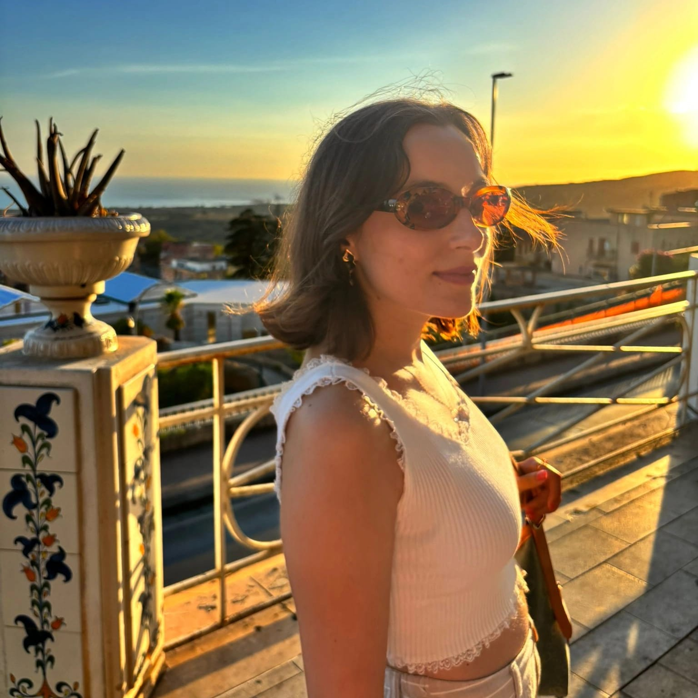

ELISA RAELI

A cosa mi dedico quando non programmo:
Videogiochi
Lettura
Tiro con l'arco
Istruzione:
Laurea Triennale in Informatica Umanistica - Università di Pisa
Diploma Liceo Classico Empedocle - Agrigento
Esperienze lavorative
Ruolo
Datore
Località
Periodo
Welcome Staff
CoopCulture
Agrigento
Giugno 2025 - Settembre 2025
Tirocinio in Transmedia Storytelling
TedLab
Università di Pisa
2022 - 2023
Collaborazione sviluppo app
Ristostore
Pisa
2022